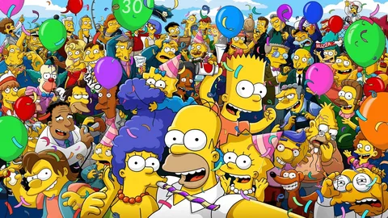
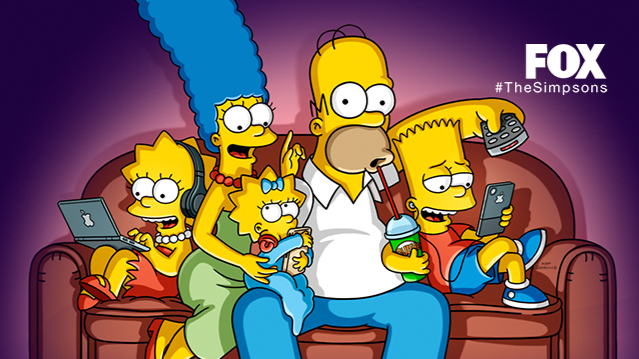

«Си́мпсоны» — американский анимационный сериал в жанре ситуационной комедии, созданный мультипликатором и карикатуристом Мэттом Грейнингом для телекомпании Fox Broadcasting Company. «Симпсоны» — самый длинный мультсериал в истории американского телевидения, непрерывно выходящий с 1989 года; в октябре 2023 года началась трансляция 35 сезона сериала.
Мультсериал в сатирическом ключе показывает жизнь семейства Симпсонов и других жителей вымышленного городка Спрингфилд, высмеивая многие клише и стереотипы, в частности — стиль жизни «среднего американца», особенности мировых культур в целом, знаменитостей и даже само телевидение и телеканал «Fox». Сериал не стесняется затрагивать такие скользкие вопросы, как политика и религия: в частности, поднимались темы однополых браков, борьбы дарвинистов и креационистов, войны в Ираке, ювенальной юстиции, политкорректности, феминизма, права граждан на оружие, легализации наркотиков и т. п.
Сериалу предшествовал выпуск нескольких короткометражных мультфильмов, созданных Грейнингом; первая из этих серий «Good night» была показана в «Шоу Трейси Ульман» 19 апреля 1987 года. Демонстрация полноценных серий мультсериала началась 17 декабря 1989 года на канале FOX. Выпускается «Gracie Films» для кинокомпании «20th Century Studios». Мультсериал в настоящее время известен телезрителям более чем в 100 странах. Журнал Time в 1998 году назвал «Симпсонов» лучшим телевизионным сериалом 20 века. 27 июля 2007 года в США прошла премьера полнометражного мультфильма с героями сериала, «Симпсоны в кино».

Идея создания сериала осенила Мэтта Грейнинга, когда он зашёл в офис Джеймса Брукса, чтобы предложить серию короткометражных анимационных работ. В то время он был известен как автор популярных комиксов «Жизнь в аду» и собирался предложить именно их, но в конце концов передумал, чтобы не лишаться прав на комиксы. Ему было нужно что-то новое, и тогда он наспех набросал план сериала о жизни американской семьи. Грейнинг назвал персонажей в честь членов собственной семьи и сделал их жёлтыми, чтобы выделить среди остальных.
Семья Симпсонов в мультипликационной форме впервые появилась в «Шоу Трейси Ульман» (англ. The Tracey Ullman Show) (еженедельное шоу с комедийными и музыкальными номерами, которое показывалось на канале FOX с апреля 1987 года по май 1990 года) с первой серией «Good night» 19 апреля 1987 года). Вначале персонажи были нарисованы достаточно плохо, поскольку Грейнинг не имел достаточно времени, чтобы хорошо их нарисовать, а аниматоры лишь скопировали его наброски. Мини-серии (продолжительностью около двух минут) выходили в эфир на телеканале FOX в течение трёх сезонов, позже некоторые из них, включая «Good night», были включены в юбилейную серию. В 1989 году Симпсоны перекочевали в «собственный» сериал, транслируемый телекомпанией FOX Network как еженедельное шоу. Первой показанной серией полной продолжительности была «Simpsons Roasting on an Open Fire». Изначально первой серией должна была быть «Some Enchanted Evening», однако она была отвергнута по причине некачественной анимации и в итоге стала последней серией первого сезона.
«Симпсоны» были первым настоящим хитом FOX Network, это было первое шоу компании FOX, появившееся в тридцатке лучших программ сезона. Трейси Ульман подала в суд на продюсеров, так как считала, что сильно поспособствовала популярности мультфильма и заслужила компенсации за это, но ничего не добилась.
Сценаристы часто демонстрируют свою любовь к использованию знаменитостей в ярких эпизодических ролях, а также цитированию современных и классических кинофильмов. В 1995 году компания Western Pacific Airlines в рамках рекламной акции раскрасила Боинг-737 портретами главных героев. Создатель Мэтт Грейнинг и некоторые сценаристы отказались совершить полёт, в шутку мотивируя это тем, что если самолёт упадёт, они погибнут вместе со своими героями. «Симпсоны» оказались популярнее авиакомпании, так как последняя разорилась в 1998 году. Бразильская авиакомпания GOL поместила фигурки бегущего Гомера вдоль фюзеляжа самолёта Боинг-737-800.
9 февраля 1997 года «Симпсоны» превзошли «Флинстоунов» как самый долгоидущий мультипликационный сериал в Америке. В 2004 году «Симпсоны» оставили позади «Скуби-Ду» по количеству серий.
В 2005 году журнал «Men's Health» признал Гомера Симпсона философом десятилетия.
Герои мультсериала неоднократно попадали на обложки различных журналов. Например, в выпуске журнала Rolling Stone за ноябрь 2002 года, Барт изображён в виде младенца с обложки альбома Nirvana «Nevermind». В ноябрьском выпуске Playboy за 2009 год, приуроченном к 20-летию «Симпсонов», на обложке изображена Мардж Симпсон, сидящая на стуле в виде фирменного кролика Playboy, который прикрывает её обнаженное тело.
В преддверии 17-го сезона на британском телеканале Sky1 был показан проморолик, представляющий собой традиционную заставку «Симпсонов» с реальными людьми вместо привычных мультипликационных героев. Машина Гомера в том ролике — ВАЗ-2105 «Жигули». Это видео быстро распространилось по Интернету и стало популярным, а впоследствии было использовано в качестве заставки в пятнадцатой серии семнадцатого сезона, «Homer Simpson, This Is Your Wife».
500-й эпизод — «At Long Last Leave» — вышел 19 февраля 2012 года. Это первая серия, где в заставке на доске пишет не Барт (в серии пишет Милхаус — «Барт заслужил выходной»).
14 января 2010 года на канале «Fox» был показан 40-минутный фильм «The Simpsons 20th Anniversary Special – In 3-D! On Ice!», посвящённый истории знаменитого сериала.
26 января 2023 года мультсериал был продлён до 36 сезона.
Примерно 50 человек работают для создания анимации серии «Симпсонов». Раскадровка и малая часть анимации делаются на студиях «Gracie Films» и «20th Television» (позже ― «20th Television Animation») в Лос-Анджелесе, штат Калифорния. Большая часть анимации производится на студиях «Rough Draft Studios» в Южной Корее. Команда корейских аниматоров использует раскадровки в качестве шаблонов, а после анимирует каждую сцену вручную, рисует фоны и делает покраску на компьютерах. После завершения работ в Корее калифорнийская команда монтирует серию и добавляет музыку.
В течение короткометражек «Шоу Трейси Ульман» и первых 13 сезонов, мультсериал использовал традиционную рисованную анимацию, а начиная с 6 серии 14 сезона «The Great Louse Detective» был сделан переход к цифровой рисованной анимации.
С 2009 года при переходе мультсериала на HDTV-формат съёмочная группа при анимации начала использовать графические планшеты. Эпизод двадцатого сезона «Take My Life, Please» был первой серией мультсериала, где команда применила этот метод. Мэтт Грейнинг назвал это сложным изменением, потому что оно влияло на время и композицию анимации.
